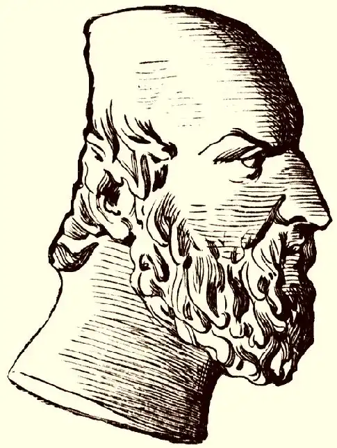

ЕСХІЛ
(525-456 до н. е.)
Видатний давньогрецький драматург, за загальним визнанням, "батько трагедії" Есхіл жив і творив у період становлення афінської рабовласницької демократії. За свідченням античних вчених, народився він в Елевсіні поблизу Афін в аристократичній родині. Брав активну участь у війні греків проти агресивної перської деспотії, виявив неабияку мужність у битвах при Марафоні, де був поранений, при Саламіні, де греки завдали поразки величезному перському флоту, та Платеях. До речі, в епітафії, написаній собі самому, Есхіл жодного слова не говорить про себе як трагічного поета, а згадує лише про свою воїнську звитягу: Тут Есхіла Афінського, Евфоріонова сина, Гели плодюча земля тіло його прийняла. Згадує гай Марафонський відвагу його, то ж і плем'я Довговолосих міфян — в битві пізнали її. У той же час його світова слава пов'язана саме зі служінням музі трагедійного мистецтва — Мельпомені. Писати Есхіл почав після двадцяти років, але успіху домігся лише після сорока. Майже все життя Есхіла пов'язане з Афінами, славу яких він відстоював мечем і пером і які залишав лише двічі — його поїздки були пов'язані з Сицилією. Уперше він поїхав туди у 470 році до н. є.— на запрошення сицилійського тирана Гієрона для постановки своєї трагедії "Перси", яка перед цим з успіхом пройшла в Афінах. Туди ж він навідався і наприкінці життя після успішної постановки тетралогії "Орестеї" в 458 році до н. є. Там він і помер у місті Гелі, де й похований. На надгробному камені чудом збереглася вищезгадана автоепітафія. Про смерть Есхіла існує легенда, згідно з якою він знав від оракула, що загине від удару з неба. Щоб уникнути випадкового падіння на голову якого-небудь предмета в місті, він вирушав у поле і там обдумував і писав свої твори. Та втекти від долі йому не судилось. Якось орел, тримаючи в пазурах черепаху, шукав скелю, об яку можна було б розбити панцир своєї жертви. Оскільки Есхіл був лисий, то орел помилково сприйняв його голову за блискучий камінь і випустив зі своїх пазурів черепаху просто на поета. За своє життя Есхіл створив близько 70 трагедій і 20 сатиричних драм. Театральні вистави в Афінах відбувались у формі драматичних турнірів на Діонісійських святах: Великих (міських) Діонісіях, які продовжувались більше тижня (березень); Малих (сільських) Діонісіях (грудень) і Ленеях (лютий). Якщо на Великих Діонісіях драматичні поети виступали зі своїми новими творами, то на Ленеях ставилися вже відомі трагедії. На змагання зазвичай допускались три драматурги, які представляли свої твори у формі тетралогій (три сюжетно пов'язані трагедії і одна сатирична драма із сатирико-гумористичним змістом). Ім'я поетів відповідно до отриманих місць і назви всіх частин представлених тетралогій викарбовувались на мармуровій стелі — дикаскалії, яка встановлювалася після визначення переможців поблизу театру в місці, присвяченому Діонісу. Найбільш почесним, безумовно, вважалось перше місце. Есхіл завойовував його 13 разів, що свідчить про надзвичайно високий рівень його драматургічної майстерності. Саме Есхіл сформував канон давньогрецької трагедії, надав їй пафосу громадянського та морально-філософського звучання, ввів багато новацій, завдяки чому вона набула державницького значення у житті Греції класичного періоду. Якою ж була есхілівська трагедія, що її наслідували і розвивали згодом видатні майстри цього жанру Софокл (496-406 роки до н. е.) та Еврипід (480/84-406 роки до н. е.)? Дія в трагедії розігрувалася між хором, який складався з 12 або 15 хоревтів, тобто співаків, на чолі з корифеєм (заспівувачем) і актором (протагоністом). Есхіл ввів другого актора (девтерагоніста), що певною мірою обмежило хор і зробило розвиток дії більш напруженим і динамічним. Софокл, спираючись на досвід Есхіла, ввів третього актора (тритагоніста). Есхіл же запровадив типову для давньогрецької трагедії форму трилогії — три сюжетно пов'язані між собою трагічні події, обов'язково почерпнуті з міфології. Єдиним винятком в історії давньогрецької трагедії є трагедія самого Есхіла "Перси", присвячена сучасній авторові події — Саламінській битві (480рік до н. е.), у якій він брав активну участь. "Перси", постановником (хорегом) якої був майбутній уславлений вождь Афін Перікл, посіла на Діонісіях 472 року до н. е. перше місце. Хвилюючі й злободенні для свого часу проблеми людської долі в зіткненні з невблаганним фатумом, невідворотність покарання за злочини супроти божественних настанов, проти Правди й Справедливості, єдність греків перед навалою перської агресії могли бути вирішені лише у формі трилогії. Емоційна напруженість трагічних подій упродовж трьох драм вимагала психологічної розрядки, отже Есхіл, як згодом Софокл та Еврипід, завершує свої трилогії веселою сатиричною драмою. Кожна класична давньогрецька трагедія починалася з прологу, в якому актор або актори сповіщали глядача про наступну дію і про те, що їй передувало. Потім на сцену (орхестру) виходив хор і, вишикувавшись чотирикутником обличчям до глядачів, виконував першу пісню, яка називалась пародом. До кінця дії хор залишався на сцені й брав участь у дії як колективний актор і надзвичайно емоційний резонер і коментатор подій. Після пароду йшли епісодії, тобто схожі на сучасні акти або дії, в яких хор брав участь нарівні з акторами, що надавало виставі високої естетичної багатобарвності (діалоги, сповнені мудрих висловів, афоризмів, дотепів; музика та співучі й пластично-рухливі втручання хору) і психологічної напруги. Кожний епісодій, яких було чотири чи п'ять, супроводжувався стасимом — урочистою піснею хору без акторів. Завершувалася трагедія ексодом — заключною піснею хору та його урочистим виходом з орхестри. У деяких трагедіях (особливо у Есхіла) ексодові предував коммос — піднесено-речитативна пісня хору разом з акторами, в якій оплакувалась трагічна доля героїв і висловлювалось їм співчуття. Отже, есхілівська трагедія мала складну сюжетно-композиційну й емоційно-психологічну структуру, насичену актуальними для свого часу проблемами та смислами. Тому не дивно, що вона справляла надзвичайно велике враження на глядачів, залучаючи їх до світу високих вчинків, почуттів, пристрастей і страждань і очищаючи їх від усього буденно-низького та пересічного. Це очищення через співчуття до трагічної долі легендарних героїв Аристотель назвав катарсисом. Ця якість притаманна всім трагедіям Есхіла, бо саме він започаткував низку могутніх і монументальних образів — Прометея, Ореста, Кассандри, Клітемнестри — носіїв надзвичайних доль, нечуваних пристрастей і незламних характерів, які стали вічними супутниками людства. З усієї кількості написаних ним трагедій до нас дійшло лише сім. Це "Перси", "Благальниці", "Семеро проти "Фів", "Прометей прикутий" і єдина трилогія, Що зберіглася повністю, "Орестея" ("Агамемнон", "Жертва біля гробу", "Евменіди"). Трагедії "Перси" (472 рік до н. е.), "Благальниці" (рік написання невідомий) і "Семеро проти Фів" (467рік до н. е.) відносять до ранніх трагедій ораторного типу, в яких головну роль ще відіграє хор і герої мають здебільшого статичний характер. У "Персах" — єдиній трагедії на сучасний сюжет — Есхіл осмислює історичне значення перемоги греків над персами і уславлює патріотизм і мужність свого волелюбного народу. Цікаво відзначити, що апофеоз могутності Афінської держави, демократичного устрою життя греків досягається за рахунок міркувань і висловлювань представників переможеної сторони —— матері перського царя Ксеркса Атосси та викликаної нею тіні свого померлого чоловіка царя Дарія. У "Благальницях" та "Семеро проти Фів" Есхіл звертається до сивої давнини. В основі першої трагедії — міф про втечу Даная зі 50 своїми дочками від небажаного шлюбу з 50 синами Єгипта, брата Даная. Притулку і порятунку вони благають у аргоського царя Пеласга, який після ради з аргосцями бере їх під свій захист. Друга трагедія розповідає про один із епізодів прокляття, що тяжіє над родом фіванських царів. Полінік, один із синів жорстоко покараного за провини своїх предків царя Едіпа, приводить під стіни Фів шестеро своїх друзів із військом, щоб повернути владу, якої незаконно позбавив його брат Етеокл. У цій боротьбі за владу гинуть обидва брати. Трагедія, будучи своєрідним відгуком на греко-перські війни, одночасно несла в собі провідну ідею есхілівської творчості — зіткнення Людини з фатумом і невідворотність покарання всіх членів роду, причетного до злочину проти Правди і Справедливості. Ця ж ідея, доповнена ідеєю возвеличення афінської держави, її законів і форм демократичного правління, покладена й в основу трилогії "Орестея" (458рік до н. е.). Вона реалізується на матеріалі ще одного міфу про рід, над яким тяжіє прокляття,— рід Атридів. Син Атрея, заплямованого жахливим злочином — частуванням свого брата м'ясом убитих ним же братових дітей, Агамемнон, вождь всього грецького війська під Троєю, після повернення додому гине від руки своєї дружини Клітемнестри ("Агамемнон"). Сама Клітемнестра, у свою чергу, гине від руки власного сина Ореста, який, виконуючи волю Аполлона, виступає месником за батька. Переслідуваний страшними богинями помсти Ериніями, Орест залишає Аргос ("Жертва біля гроба"), тікає спочатку до храму Аполлона у Дельфах, а потім, за порадою того ж Аполлона, в Афіни, де за допомогою богині Афіни отримує виправдання і примирення з Ериніями, які віднині стають милостивими богинями ("Евменіди"). Найвідомішою і найвизнанішою трагедією Есхіла вважається "Прометей прикутий", який є частиною трилогії, куди входили "Прометей вогненосний" і "Звільнений Прометей". Очевидно, трилогія була написана у 469 році до н. е. Трагедія "Прометей прикутий" розповідає про покарання, якому Зевс піддав могутнього титана за те, що той із співчуття до людей, позбавлених Зевсом розуму й світла знань, викрав з Олімпу вогонь і передав його людям для користування. У монолозі Прометея постає вражаюча картина його цивілізаторської місії: То я ж їм, дітям неімущим, розум дав, Я наділив їх мудрою розважністю... Не знали ні теслярства, ні осонених Домів із цегли, а в землі селились, Мов комашня численна, десь у темряві Печер глибоких, сонцю недосяжних. І певної ще не було прикмети в них Для зим холодних і квітучих весен, І золотого літа плодоносність. Весь труд їх був без смислу.